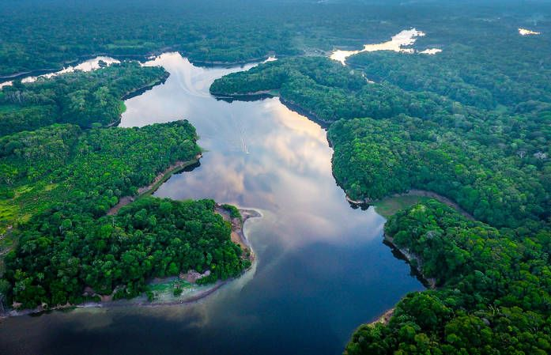
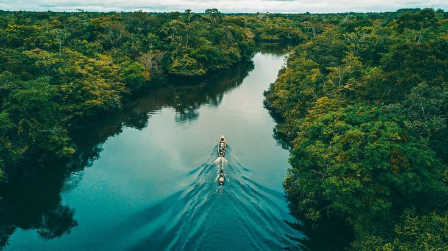
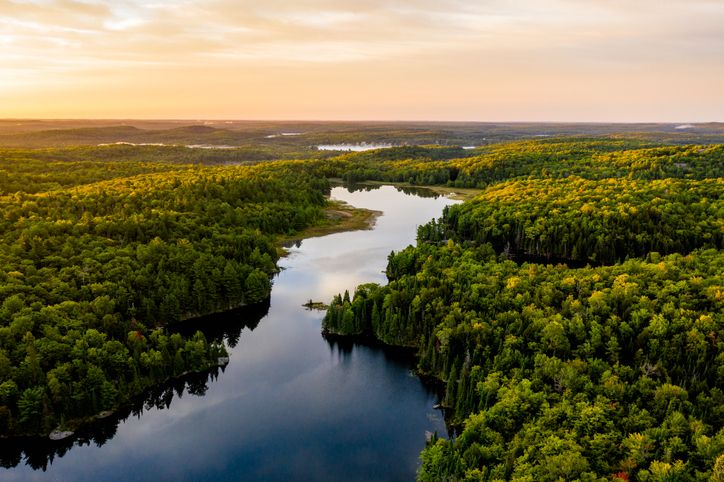

Rios
Bacia do Tiête é pouco preservada
Bacia hidrográfica do Tiête, importante para abastecimento, tem pouca área preservada
>Rios
A hidrografia da mata atlântica é um dos aspectos mais importantes do bioma, já que a água é um recurso essencial para a vida e para o equilíbrio dos ecossistemas.
04/05/2026

A Mata Atlântica não é apenas uma reserva de biodiversidade, ela é a principal infraestrutura
natural de abastecimento de água do Brasil. Geograficamente, o bioma abrange 7 das 9 maiores bacias
hidrográficas do país, atuando como uma imensa esponja que retém a umidade e alimenta os lençóis
freáticos. Estima-se que a floresta seja a fonte direta de água para mais de 110 milhões de pessoas,
distribuídas por cerca de 3,4 mil municípios. Embora 72% da população brasileira dependa vitalmente
desses recursos hídricos, a percepção pública sobre a gravidade da situação do bioma ainda é alarmante.
A importância da Mata Atlântica transcende o uso doméstico: ela é o motor econômico da nação, sustentando
regiões que concentram 70% do PIB brasileiro. Para o agronegócio, a floresta é um insumo invisível,
garantindo a umidade necessária para as safras e a estabilidade climática que evita secas extremas.
A integridade dos rios está diretamente ligada à preservação da vegetação ciliar (as matas nas margens
dos rios). Quando a floresta é removida, o impacto é imediato; sem raízes para segurar o solo,
a chuva carrega sedimentos para dentro do leito, diminuindo a profundidade e a capacidade de vazão
dos rios. Esse processo é agravado pelo descarte inadequado de esgoto e resíduos industriais, reduzindo
drasticamente o volume de água potável disponível para consumo e lazer.
A situação crítica foi confirmada por estudos recentes do programa "Observando os Rios". Ao
analisar a qualidade da água em 162 pontos de coleta abrangendo 128 rios em estados em que a Mata
Atlântica está presente, esses foram os resultados: 3,1% apresenta água classificada com qualidade boa,
78,4% apresenta água classificada com qualidade regular, 15,4% apresenta água classificada como ruim e
3,1% apresentam água classificada como de péssima qualidade. Esses dados mostram que a grande maioria
dos nossos corpos d'água está no limite da sobrevivência biológica, exigindo tratamentos complexos e
caros para se tornarem próprios para o consumo humano.
Apesar do cenário desafiador, a natureza demonstra uma resiliência notável quando recebe auxílio.
Pequenos focos de recuperação mostram que é possível reverter o quadro. Casos como o do Rio Betume
(Pacatuba/SE) e o do Rio Capivari (Florianópolis/SC) servem como exemplos de que a gestão eficiente
e a regeneração da flora local podem melhorar a qualidade hídrica de forma discreta, mas constante.
A restauração plena da fauna, flora e das bacias hidrográficas não é apenas um desejo ambientalista,
mas uma necessidade de sobrevivência nacional. Para que isso ocorra, é essencial que a população
compreenda a extensão dos danos e se engaje em políticas de preservação, saneamento básico e reflorestamento.
Afinal, proteger a Mata Atlântica é, literalmente, proteger a torneira da nossa casa.



Rios
Bacia hidrográfica do Tiête, importante para abastecimento, tem pouca área preservada
>Rios
Mais de 60% dos rios do bioma não possuem água propícia para consumo
>Rios
Mesmo com esforços para recuperação do bioma, a qualidade da água continua ruim
>